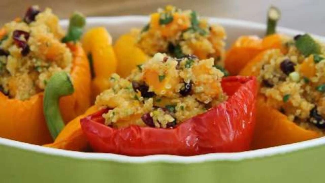

Quinoa Stuffing

Description
Quinoa is a fluffy, slightly crunchy, high-protein, gluten-free alternative grain native to South America. This can be used to stuff a turkey or served as a side dish.
Ingredients
- 4 cups vegetable stock
- 2 cups quinoa
- 1/4 cup olive oil
- 1 butternut squash, peeled, seeded, and diced
- 2 small zucchinis, cut into 1-inch cubes
- 1 bunch green onions, chopped
- 1 cup diced dried apricots
- 1 cup dried cranberries
- 1 cup chopped fresh parsley
- 1 lime, juiced to taste
Steps
- Bring vegetable stock to a boil in a saucepan, reduce heat to low, and stir in quinoa. Cover pan and simmer until quinoa absorbs the liquid, 10 to 15 minutes. Remove from heat.
- Heat olive oil in a large skillet over medium heat. Cook and stir butternut squash and zucchinis in the hot oil until slightly browned, about 10 minutes. Stir quinoa into the vegetables and gently mix green onions, apricots, cranberries, and parsley into the stuffing. Drizzle with lime juice to taste.